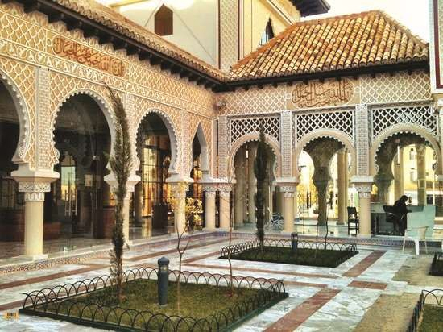
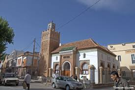
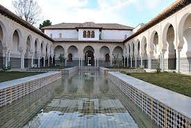

Des lieux à voir, des rues à explorer et des expériences emblématiques
 |
le plateau de Lalla SettiDestination incontournable lors de votre visite à Tlemcen le plateau de Lalla Setti domine la ville de Tlemcen à 1000 mètres d'altitude offrant une vue panoramique sublime sur toute la ville de Tlemcen. Au niveau de Lalla Setti se trouve notamment le tout nouveau musée Moudjahid, un parc d'attraction, l'hôtel 5 étoiles Renaissance, un lac artificiel alimenté naturellement composé de deux bassins séparés par un gué est équipé de pédalos qui font la joie des enfants. |
 |
Le centre d’études andalousesLe centre d’études andalouses de Tlemcen est un joyau architectural inspiré de l’art mauresque andalou. Le côté architectural, typiquement andalou, s’articule autour de patios thématiques, selon les fonctions de chaque partie comme c’est le cas pour la partie pédagogique qui a été appelée «patio du savoir». Tous ces petits patios donnent sur un grand patio appelé «patio des gazelles» où un grand jet d’eau est réalisé avec des gazelles tout autour. |
 |
Les cascades d’El-OuritLes cascades d’El-Ourit se trouvent dans la zone montagneuse couverte de pins à 7 kilomètres de Tlemcen en Algérie, en amont de la route nationale 7 qui relie la ville à Maghnia. Les Cascades d’El-Ourit font partie du Parc national de Tlemcen qui abrite d’importants sites archéologiques ainsi que les ruines de Mansourah et la mosquée de Sidi Boumediene. |
 |
La Grande MosquéeLa Grande Mosquée de Tlemcen a été construite en 1136 par Ali Ben Youssef, calife de la dynastie berbère des Almoravides, et son minaret en 1236 par le sultan Zianide Yghomracen Ibn Zyan. |
Les grottes de Beni AddElle sont situées à 17KMs environ de Tlemcen sur les hauteurs de la commune d’Ain Fezza, C’est l’un des plus importants musées naturels au monde, s’étalent sur 700 m, avec une profondeur atteignant 57 m. ses parois volcaniques recèlent nombre de secrets avec les concrétions calcaires qui dessinent des stalactites et stalagmites aux formes les plus variées et de toute beauté |
|
 |
La Citadelle El MechouarLa citadelle El Mechouar édifié en 1145 par Abd El Moumen Ben Ali de la dynastie Almohade fut un lieu de campement militaire Almoravide lors du siège d'Agadir vers le milieu du XIè siècle. Yaghmoracen Ibn Ziane fondateur de la dynastie quitta el Qasr el Qadim, y transféra sa résidence en cet endroit devenu siège des rois Zianides (beni Abdeloued) dès la fin du XIIIè siècle. |
 |
MensourahMansourah, est une commune de la wilaya de Tlemcen en Algérie. Construite par le sultan mérinide Abu Yaqub Yusuf (mérinade : dynastie d’origine berbère zénète), elle est surtout connue pour ses vestiges datant du XIV siècle, témoins des affrontements fratricides entre les abdalwadides et les mérinides. |